Donald Trump n'est pas content de Dario Amadei. Il a demandé à toute l'industrie de l'IA de ralentir et Elon et Sam ont été d'accord avec lui. Et ce n'est que la deuxième actualité. C'est la semaine 50 des actualités sur l'IA. C'est parti. 9. Google a transformé votre bloc-notes en tuteur. Votre professeur particulier vient d'être remplacé par un bloc-notes. Discutez avec vos notes par la voix dans près de 100 langues, enregistrez des cours directement et il les transforme en quiz, en diaporamas et en explications animées.
Interface & Outils : Application mobile (interface de notes vocales / audio)
Contenu textuel & Code : Ondes audio, horodatage d'enregistrement (Aug 27 at 8:46 AM, 08:26:25) et texte explicatif sur la fonctionnalité de tuteur vocal.
Action / Démonstration : Présentation d'une nouvelle fonctionnalité d'intelligence artificielle mobile liée à l'apprentissage et aux notes vocales.
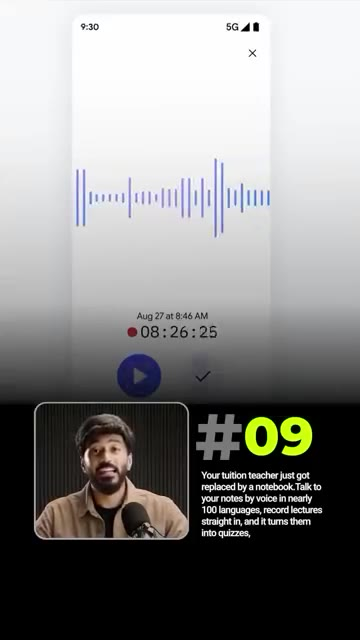
🔍 AgrandirCoupez au milieu de la réponse comme un vrai professeur qui ne dort jamais. 8. ChatGPT a appris le droit. Avocats, ChatGPT vient d'apprendre votre travail. OpenAI for Law fonctionne sur une version juridique de GPT-6 Astra avec plus de 40 compétences telles que l'examen d'accords de non-divulgation et la révision de contrats. Il rédige les documents avant que l'avocat n'ouvre le dossier et vos données ne quittent jamais la pièce.
Interface & Outils : Présentation vidéo verticale (format Reels/Shorts) avec superposition de texte et vignettes.
Contenu textuel & Code : Texte à l'écran : "Frontier intelligence for professional legal work" et résumé descriptif sur OpenAI for Law, GPT-6 Astra avec plus de 40 compétences juridiques (NDA review, contract redlining).
Action / Démonstration : Le présentateur introduit la huitième nouveauté concernant l'intelligence artificielle appliquée au domaine juridique avec OpenAI for Law.
7. Anthropic Shipt Opus 5.5 Un ingénieur, 680 000 lignes de code, un jour. C'est Opus 5.5. Les performances de Fable 5.1 avec un coût inférieur de 40 % et 30 % plus rapide, avec les gains les plus importants dans le codage agentique où il écrit et corrige du code de manière autonome. Disponible dès maintenant sur tous les forfaits.
Interface & Outils : Articles de blog et tableaux de benchmarks comparatifs.
Contenu textuel & Code : Textes descriptifs sur Opus 5.5, article de presse soulignant une réduction des coûts de 40% et un gain de vitesse de 30%, et tableau de données chiffrées de performance.
Action / Démonstration : Présentation des capacités, performances et benchmarks du modèle d'IA Opus 5.5 d'Anthropic.
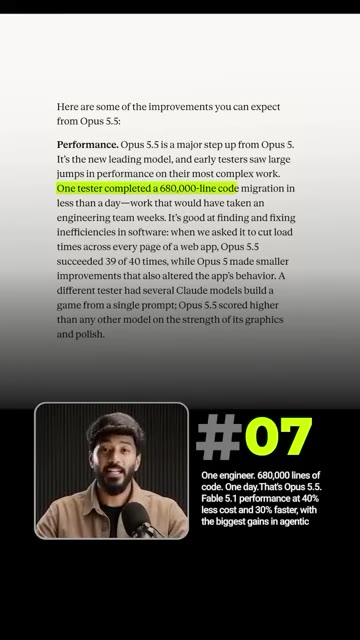
🔍 Agrandir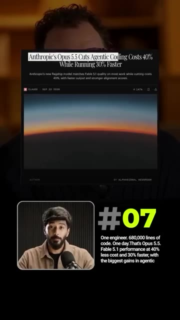
🔍 Agrandir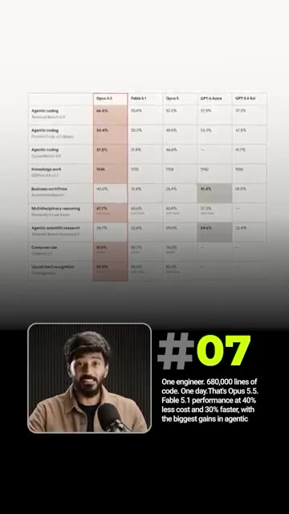
🔍 Agrandir6. OpenAI a lancé Sol et Luna. Le même cerveau qu'Astra, à moitié prix. Sol s'occupe du codage lourd. Luna, des petites tâches que l'on lance un million de fois, et toutes deux réutilisent le travail précédent au lieu de tout recalculer. OpenAI a réduit les prix des API de moitié et a augmenté les limites. 5. Elon a déployé Grok 4.7. Elon a repoussé cela cinq fois. C'est enfin sorti. Grok 4.7 travaille plus longtemps sur les tâches difficiles, vérifie ses propres réponses et s'est classé deuxième juste après o1 (pay 5.1) en matière de connaissances.
Interface & Outils : Graphique de benchmark comparatif (AutomationBench)
Contenu textuel & Code : Courbes de performance (Score en ordonnée, Coût par tâche en abscisse) pour GPT-6 Astra, GPT-6 Sol, GPT-6 Luna, Claude Opus 5 et autres modèles. Texte #06 et description des modèles Sol et Luna.
Action / Démonstration : Présentation comparative des performances et des coûts des modèles OpenAI Sol et Luna par rapport à la concurrence.
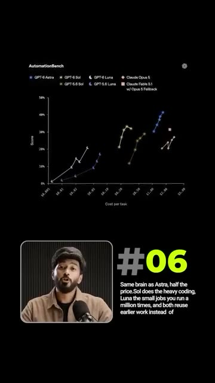
🔍 AgrandirDe nouvelles mesures de protection ne laissent passer que 3,3 % des tentatives de contournement. Des invites conçues pour le piéger et le pousser à enfreindre ses propres règles. 4. Alibaba a créé un studio dans une boîte de discussion. Une chanson plus une invite équivaut à un clip musical complet. Quen gère le texte, les images, l'audio et la vidéo en un seul modèle. Donnez-lui un court drame et il le traduit, le double et le livre dans une autre langue.
Interface & Outils : Présentation visuelle de schémas d'architecture et d'interfaces de traitement vidéo.
Contenu textuel & Code : Texte technique décrivant les performances de sécurité et diagrammes de flux d'agents IA.
Action / Démonstration : Explication des fonctionnalités d'IA avancées et des mesures de protection des modèles.
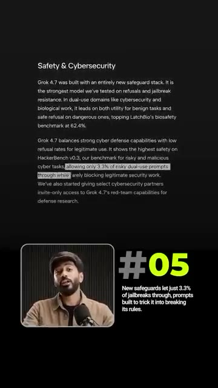
🔍 Agrandir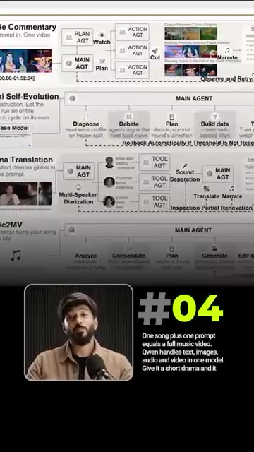
🔍 Agrandir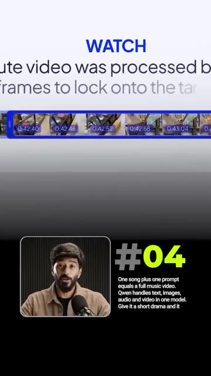
🔍 AgrandirUn studio de production à l'intérieur d'une boîte de discussion. 3. TypeSafe a inversé ChatGPT. L'homme qui a aidé à construire ChatGPT vient de créer son opposé. Jev de Diogo Almeida est le tout premier modèle de système 1. Il n'écrit aucun texte, il répond simplement par oui ou par non en une fraction de seconde, comme un filtre anti-spam. Ainsi, les applications agissent instantanément. 100 fois plus rapide et moins cher.
Interface & Outils : Interface web de Jev (TypeSafe AI) et tableau comparatif des modèles d'IA.
Contenu textuel & Code : Questions binaires posées à Jev, réponses par oui/non avec niveau de confiance et temps de réponse (312 ms), et tableau des coûts des différents LLM du marché.
Action / Démonstration : Navigation et démonstration visuelle des réponses ultra-rapides et gratuites du modèle Jev (TypeSafe AI).
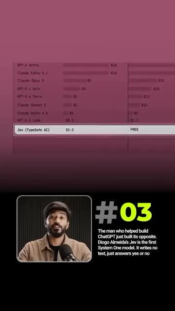
🔍 Agrandir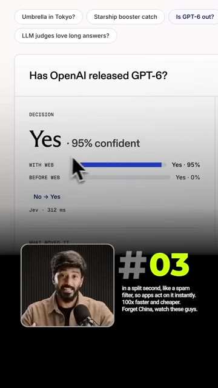
🔍 AgrandirOubliez la Chine, regardez ces types. 2. L'industrie de l'IA a accepté de ralentir. Puis a été poursuivie en justice pour cela. Dario Amadei a écrit, nous devons rythmer la frontière. Elon et Sam ont été d'accord le même jour. Trump ne l'a pas été, disant, peu importe qui gagne, l'IA gagne. 1. Claude Sonnet 5.5 est sorti. Opus est devenu 40 % moins cher. Sonnet 5.5 est XYZ et Haiku 5.5 arrive.
Interface & Outils : Tableau de benchmarks et de performances de modèles d'IA (Claude Sonnet 5.5, Sonnet 5, Opus 5.5, GPT 4.5v).
Contenu textuel & Code : Tableau comparatif des performances de Claude Sonnet 5.5 (Agentic coding, Knowledge work, Multidisciplinary reasoning, Computer use, Visual chart recognition) avec des scores chiffrés.
Action / Démonstration : Présentation des performances des nouveaux modèles de Claude (Sonnet 5.5, Opus 5.5, etc.) avec leurs statistiques et gains de prix.
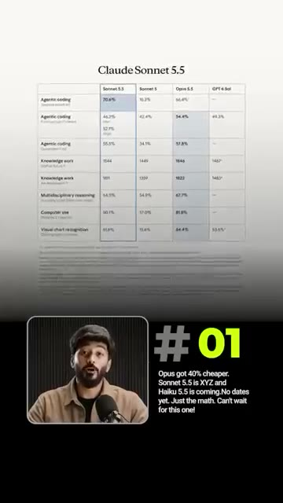
🔍 AgrandirPas encore de dates. Juste les maths. J'ai hâte pour celui-ci. Cette semaine, l'IA est passée du tribunal à la salle de classe, les modèles sont devenus moins chers et plus rapides, et les grands laboratoires ont commencé à se disputer pour savoir s'il fallait tout ralentir. Je partage des mises à jour comme celle-ci dès qu'elles sortent dans ma communauté WhatsApp gratuite. Rejoignez LinkedIn Bayo.
Interface & Outils : Application mobile WhatsApp, interface de communauté.
Contenu textuel & Code : "Join the free WhatsApp Community", "Link in Bio" et aperçu de l'application mobile.
Action / Démonstration : Promotion de la communauté WhatsApp de la chaîne avec un appel à l'action visuel ("Link in Bio").